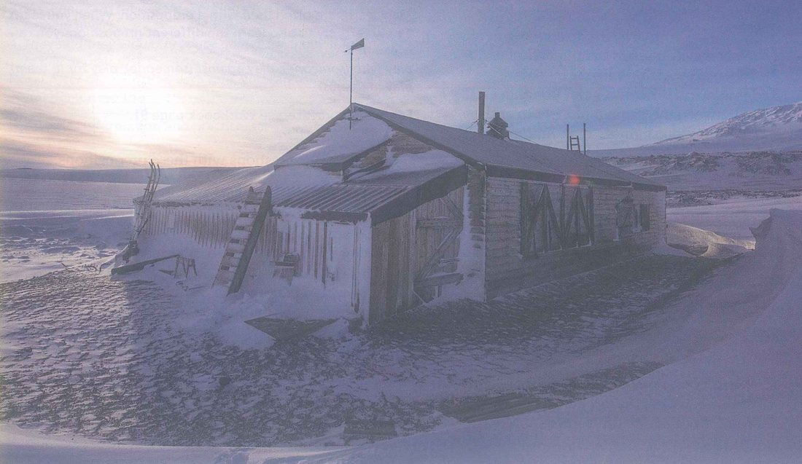
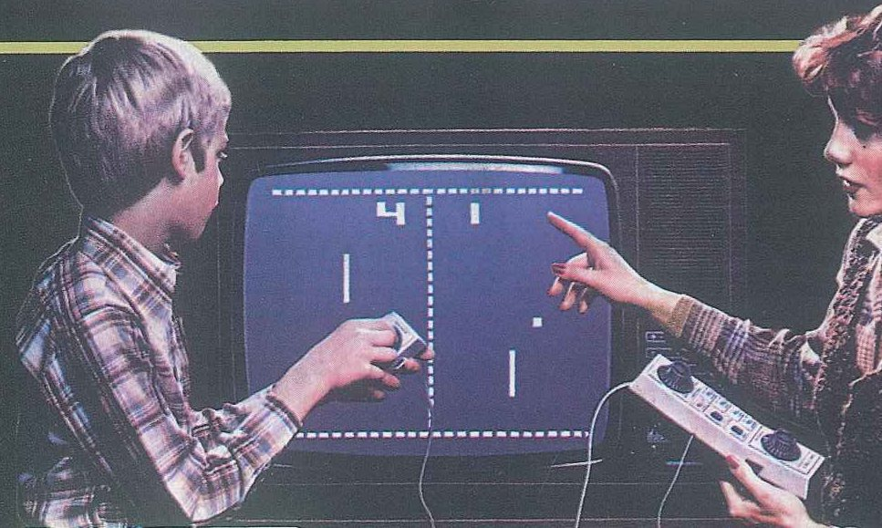
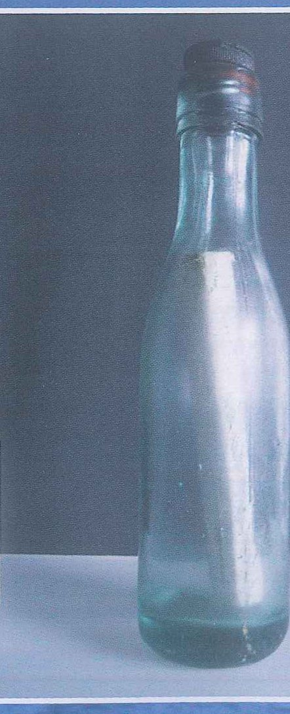
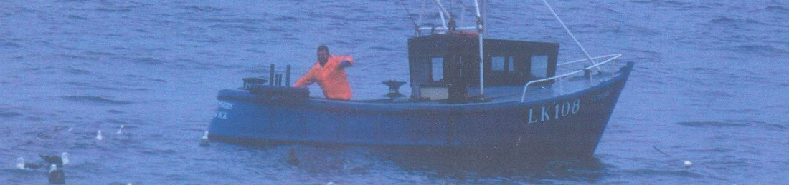

Aims of the lesson & Lead-in
Aims of the lesson
After the lesson, you will be able to:
- Name 40+ words and chunks for video games, verb + preposition, communication and history.
- Explain how tenses, pronouns and time words change when you report what someone said.
- Tell apart say and tell: told me, never said me or told to me.
- Report what a patient, a teacher or a classmate said a week ago.
- Find details, references and the writer's meaning in the coursebook texts and in PET-style reading.
- Pick out key information in the coursebook recordings and in PET-style listening.
- Give and defend an opinion on games, history and messages from the past with the 7-step frame.
- Write an academic paragraph of 120–150 words about a historical place or event.
- Value places, objects and messages that are worth keeping for future generations.
Lead-in 1 · Photos from the past — describe and react

- Question 1"The hut is about one hundred years old. Where do you think it is?"
- Question 2"What do you think Captain Scott did?"
- Question 3"Why do you think people want to look after the hut today?"

- Question 1"What can you see in the photo?"
- Question 2"When do you think it was taken?"
- Question 3"How many differences can you think of between this game and modern video games?"

- Question 1"Who do you think wrote the message in this bottle?"
- Question 2"What do you think the message says?"
- Question 3"Would you ever send a message in a bottle? Why or why not?"

- Question 1"Where is this boat, and what is the man doing?"
- Question 2"What unusual things do you think fishermen find in their nets?"
- Question 3"How would you feel if you found a message that was a hundred years old?"
Lead-in 2 · Agree or disagree?
1 · Video games are a waste of time for medical students.
Model answer
I partly disagree. Some games are a waste of time, but a short puzzle game after a long day on the ward helps me relax. The real problem is losing track of time, so I stop after half an hour.
2 · Handwritten letters mean more than text messages.
Model answer
I agree. In my first year at the academy, my grandmother sent me a letter, and it's still in my drawer. I've deleted hundreds of texts since then, but I still read that letter.
3 · Young people today don't need to learn history.
Model answer
I disagree. History explains why our country is the way it is. Even in medicine we learn from the mistakes doctors made a hundred years ago.
4 · Old buildings should be pulled down to make space for new hospitals and schools.
Model answer
I don't agree at all. A city needs hospitals, but it also needs its memory. If planners think carefully, there's usually space for both.
5 · Every school should make a time capsule for future students.
Model answer
I agree. It's cheap, it's fun, and it makes students think about their own lives. Twenty years later, the letters inside would show how much everything had changed.
6 · Doctors should keep paper notes as well as electronic records.
Model answer
I partly agree. Computers can crash, so a paper copy of the key information is a good backup. But writing everything twice takes too long, so I'd keep paper notes only for emergencies.
- I completely agree / I partly agree / I don't agree at all, because …
- It depends on …
- In my experience, …
- That's true, but …
Lead-in 3 · Listen · Track 86 · Captain Scott's hut — a time capsule
Listen to a historian talking about the hut and choose the best answer (SB p. 129 Ex 2)
Just over one hundred years ago, the British explorer Captain Robert Falcon Scott died with his team of men in the snow and ice of Antarctica. He had reached the South Pole, but never returned to this hut, which was the starting point for his expedition. Now the hut is falling down under the snow, and we would like to save it – not just because of its connection to Scott, though this of course is important. Actually, we are more interested in what you find inside the hut. Because of the freezing temperatures in this part of the world, the hut has become a time capsule. There are items of food, such as butter, biscuits and tins of meat, which are one hundred years old. The ice has preserved them all. There are even some of Scott's old possessions and equipment, and things like soap and medicine bottles. When you go inside the hut, it's almost as if he has only just left it. I think we need to look after it because it tells us so much about Scott, but also about our own past.
Work in groups. Your time capsule will be buried under the ground for future historians. Choose five objects — from the list or your own ideas — and agree on the reasons.
- We chose … because it shows how people … today.
- Future historians will be able to see …
- We didn't choose … because it will go bad / it won't last.
- Our group agreed on … , but Minh said that …
Lead-in 4 · How many words do you have for each of the 4 groups?
Which words do you know for games, devices and playing?
Which verbs do you know that go with with, for, on, about or to?
In how many ways can you send a message to one person, or to lots of people?
Which words do you need to talk about history, historical places and events?